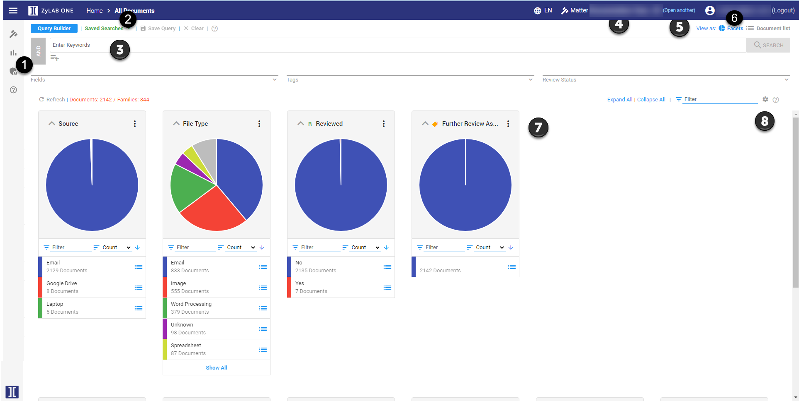
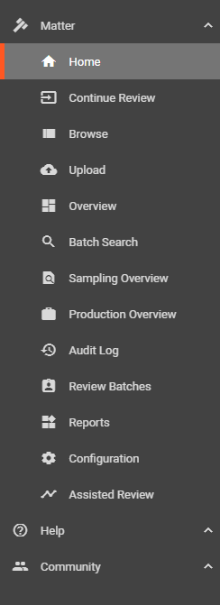
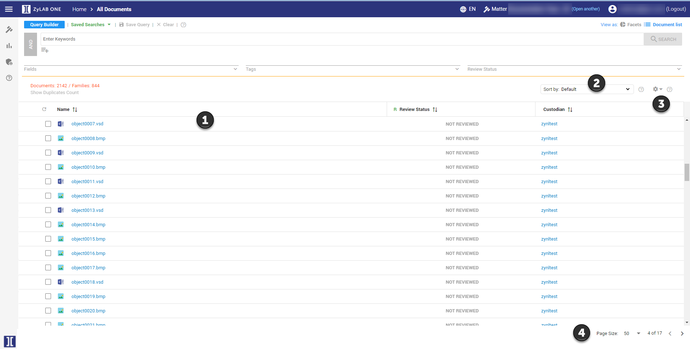
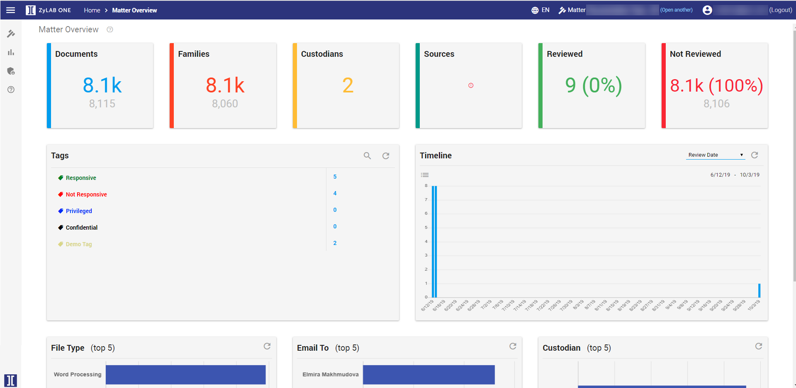
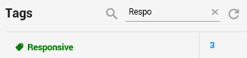
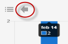

If you select Assisted Review, you can identify relevant documents in a large data set.
Document Dashboard
The document dashboard gives an overview of all the data present in the matter.

This is the menubar.
This is the breadcrumb trail.
This is the search bar. You can search all documents by using keywords and queries.
Here you’ll see which matter you’re currently in. Select to open a different matter.
Here you can switch between document list view and facet view.
Here you’ll see under which account you’ve logged in. You can log out by selecting Logout.
These are the facets. Facets visualize the documents by dividing them based on different characteristics. For example differences in the meta data of a document, like the data it was made, the person who the document belongs to, etc. By selecting a slice of a facet, you can easily specify your search.
Here you can personalize your facet view.
Menubar
In the Menubar you'll find the options also available in the Matter Dashboard.

Document List
When you switch from facet view to document list, you will see the following screen:

Here you’ll see your documents and the corresponding meta data. Which meta data is displayed can be changed according to your preferences.
Here you can find different ways to sort your documents.
Here you can change settings and employ different functionalities. More information about this topic is explained below in Document List Options.
Here you can select how many documents are displayed per page. You are also able to see how many pages there are in total and which page you are on currently.
Document List Options
Columns: Here you can change which columns are displayed in your document list. You can change these according to what type of meta data you’re searching for.
List Options: Here you can select whether or not you want to see connections between related documents.
Views: Here you can switch between saved views. By selecting certain columns and then saving the view, you can quickly switch between different views depending on what type of information is most interesting during your search.
Duplicates: Here you switch between Show/Hide Duplicates Count and Show/Hide Family/Document Duplicates.
Bulk Tagging: Here you can tag multiple documents at once. Select the documents you want to tag, and then select Bulk tagging to add the tag to all selected documents.
Review Batches: Here you can divide documents into different batches. This is useful when there are multiple investigators.
Batch Downloads: Here you can download selected documents. This isn’t commonly used in an internal investigation and therefore won’t be covered in this use case.
Productions: Here you can produce the relevant documents once you’ve finished your investigation and include them in the final report.
Sampling: Use Sampling to evaluate the results of the review process. For example, evaluate the tagging results of individual users.
Reports: Export current Document List to a CSV or Excel file that can be used to generate reports.
In the Matter Overview, you will see information about your progress.

Documents Tile
Click to view all matter documents in Document List as Flat List.
Families Tile
Click to view all matter documents in Document List as Family Tree.
Custodians and Sources Tile
View the number of related custodians and sources.
Reviewed and Not Reviewed Tile
Click to view documents with either the review status Reviewed or Not Reviewed.
Tags
View five of the available tags.
The tags are sorted according to the order used in Document View.
Click Show More to view all available tags.
The number of labeled documents is displayed behind each tag.
Click on a tag to open the documents labeled with this tag in the Document List.
Refresh the list for the latest information.
Search the list of tags:

Timeline
View the files in the matter according to Review Date, Created, Modified, Accessed, Email Sent Time, Email Creation Time, Email Delivery Time, Appointment Start, Appointment End
Open the files displayed in the Timeline in the Document List:
Or drill down, by clicking on a bar. For example, click on the bar with files created in 2014 (year):
Select the arrow to go back one step. Click a bar to drill down even more (month).
Or, click the Document List icon to view all documents displayed in the timeline.

You can drill down the bars until you have reached the bottom one (days). Then the Document List will be opened.
Tip: For a time range search, it is advised to use Date Search.
Facet Values
The first 3 facets from Facet View are displayed here, with the top 5 values per facet.
Click on a bar to open these documents in the Document List.